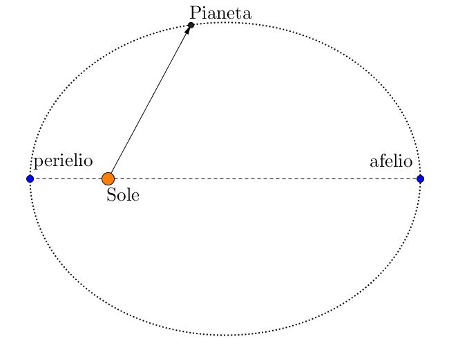
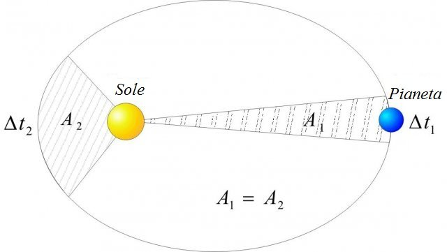
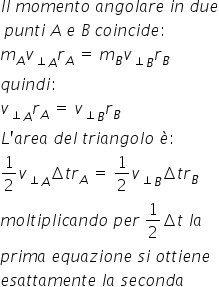
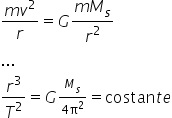
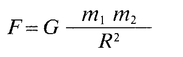
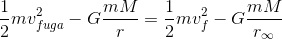
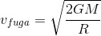

Il triplo pozzo gravitazionale
L'esperimento del triplo pozzo gravitazionale è una variante del pozzo gravitazionale classico, formato da una buca, inserendo tre punti di attrazione.
Esso consiste in un tavolo formato da un piano bucato in tre punti e curvato in modo tale da simulare le forze gravitazionali che subirebbe un oggetto se ci fossero dei pianeti in quei tre punti.
L'esperimento è volto a simulare la traiettoria che subirebbe un corpo lanciato in mezzo a tre pianeti, che verrebbe modificata dalla forza gravitazionale. Questa deviazione viene descritta dalle leggi di keplero.
La prima legge di Keplero

La prima e più famosa legge di Keplero dice che tutti i pianeti orbitano intorno al Sole con una traiettoria non circolare bensì ellittica.
Questo accade perchè la forza gravitazionale non è fissa ma aumenta con il diminuire della distanza tra i due corpi.
Un'applicazione pratica dell'esperimento è provare a lanciare la pallina più vicina al centro di un pianeta vedendo che acquista maggiore velocità.
La seconda legge di Keplero

La seconda legge di Keplero, anche detta "delle aree", afferma che il raggio vettore congiungente il sole al pianeta spazia aree uguali in tempi uguali.
Questo vuol dire che, dato che le aree A
1 e A
2 sono uguali, il pianeta percorrerà i due spazi nello stesso tempo.
La legge si può dimostrare tenendo condo che la forza gravitazionale è sempre diretta verso il centro dell'orbita, il vettore velocità rimane sempre perpendicolare al vettore forza, quindi il momento totale è nullo e di conseguenza si conserva il momento angolare

Dato questo si può dimostrare, con i passaggi a lato, che le aree dei triangoli che percorre in un tempo t sono uguali.
La terza legge di Keplero
La terza afferma che il periodo di rivoluzione varia a seconda della distanza dal sole.

In particolare il rapporto tra il cubo del semiasse maggiore (parametro a nell’equazione) e il quadrato del periodo di rivoluzione è costante per tutti i corpi in orbita intorno a un altro.
Questa si può facilmente ricavare dall'equazione delle condizioni di stabilità, eseguendo solo qualche passaggio.
La legge di gravitazione universale
Isaac Newton enunciò la forza di gravità nella sua opera Philosophiae Naturalis Principia Mathematica (1687), in termini coerenti con le osservazioni disponibili a quei tempi, e in accordo con i prinicipi della dinamica da lui stesso affermati: quest'enunciato è sufficiente a spiegare gran parte dei fenomeni che ci circondano ancora oggi.

Essa dice che la forza di attrazione gravitazionale di due masse è pari a una costante G per il prodotto delle masse fratto la distanza al quadrato.
La costante G è stata determinata con precisione solo nel 1978 e vale
6,67 x 10
-11 NM
2 / kg
2
La forza gravitazionale in prossimità della superficie della terra provoca un’accelerazione costante di circa 9,8 m / s
2
Questa può essere ricavata semplicemente eguagliando la forza gravitazionale al peso mg dell'oggetto:
La velocità di fuga
Nell'esperimento fisico, però, ci siamo accorti che era quasi impossibile far compiere un’orbita ellittica attorno a un pianeta.
Questo è dovuto al fatto che la pallina lanciata raggiungeva con estrema facilità la velocità di fuga dal "campo gravitazionale" dei pianeti.
Si definisce velocità di fuga la velocità necessaria per "sfuggire" al campo gravitazionale di un corpo. La questione non è tuttavia troppo semplice perché il campo gravitazionale ha raggio di azione infinito.
L'idea di fondo è di poter trovare una certa velocità iniziale per cui l'accelerazione negativa a cui è sottoposto lo fermi a distanza infinita.
Data quindi la legge della conservazione dell'energia con le condizioni suddette:

si possono svolgere i calcoli per ottenere la velocità di fuga che vale:
